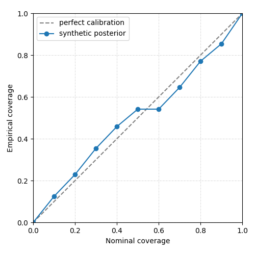

Note
Go to the end to download the full example code.
01. Introduction#
CaliBrain studies whether posterior uncertainty estimates in M/EEG inverse
source imaging are empirically calibrated. In a calibrated model, intervals
requested at nominal coverage c should contain the true simulated source
activity approximately c of the time.
This first tutorial serves as both the introduction and the scientific background entry point for the runnable gallery. It uses lightweight synthetic fixed-orientation source arrays so that the gallery build remains fast and reproducible.
Scientific question#
M/EEG inverse problems are ill posed: multiple source configurations can explain the same sensor data. A useful inverse method should therefore report uncertainty, not only a point estimate. CaliBrain evaluates that uncertainty through coverage calibration.
Here we construct the minimal objects required for a calibration curve:
x_true: simulated ground-truth source activity,x_hat: posterior mean estimate,posterior_var: source-wise posterior variance.
import matplotlib.pyplot as plt
import numpy as np
from calibrain import UncertaintyEstimator
RANDOM_SEED = 7
rng = np.random.default_rng(RANDOM_SEED)
Simulate sparse fixed-orientation source activity#
The source matrix has shape (n_sources, n_times). Most sources are zero;
a small subset contains ERP-like activity. Later tutorials replace this toy
construction with SourceSimulator and full workflow outputs.
n_sources = 48
n_times = 80
time = np.linspace(-0.2, 0.5, n_times)
x_true = np.zeros((n_sources, n_times))
active_sources = rng.choice(n_sources, size=5, replace=False)
erp_waveform = np.exp(-0.5 * ((time - 0.12) / 0.045) ** 2)
x_true[active_sources] = rng.normal(1.0, 0.2, size=(5, 1)) * erp_waveform
Create a simple posterior estimate#
In real workflows, inverse solvers such as gamma_map_sflex
or BMN produce posterior means and
covariance estimates. This first tutorial uses controlled synthetic posterior
statistics so the calibration concept is isolated from solver details.
posterior_var = np.full(n_sources, 0.06**2)
x_hat = x_true + rng.normal(
loc=0.0,
scale=np.sqrt(posterior_var)[:, None],
size=x_true.shape,
)
Compute empirical coverage#
UncertaintyEstimator constructs intervals over a nominal coverage grid and
reports the empirical fraction of source values covered by those intervals.
The aggregated method averages over time before evaluating source-level
intervals.
nominal_coverages = np.linspace(0.0, 1.0, 11)
uncertainty = UncertaintyEstimator(nominal_coverages=nominal_coverages)
curve = uncertainty.calibration_curve_intervals_aggregated(
x_true=x_true,
x_hat=x_hat,
posterior_var=posterior_var,
)
print(np.round(curve["empirical_coverages"], 3))
[0. 0.125 0.229 0.354 0.458 0.542 0.542 0.646 0.771 0.854 1. ]
Plot the calibration curve#
The dashed diagonal is perfect calibration. Points below the diagonal indicate undercoverage, i.e. overconfident uncertainty. Points above the diagonal indicate overcoverage, i.e. underconfident uncertainty.
fig, ax = plt.subplots(figsize=(5, 5))
ax.plot([0, 1], [0, 1], "--", color="0.5", label="perfect calibration")
ax.plot(
curve["nominal_coverages"],
curve["empirical_coverages"],
"o-",
label="synthetic posterior",
)
ax.set(
xlabel="Nominal coverage",
ylabel="Empirical coverage",
xlim=(0, 1),
ylim=(0, 1),
)
ax.set_aspect("equal", adjustable="box")
ax.grid(True, linestyle="--", alpha=0.4)
ax.legend()
fig.tight_layout()

Summary#
Production workflows use the same scientific objects but persist them as H5 posterior summaries, manifest CSV files, aggregated NPZ datasets, calibration JSON summaries, and publication figures.
Total running time of the script: (0 minutes 0.102 seconds)